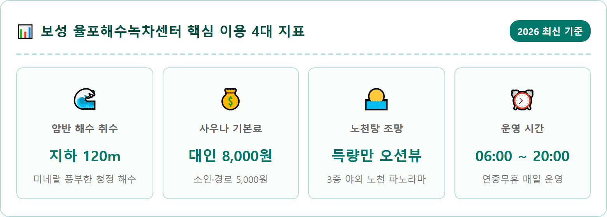
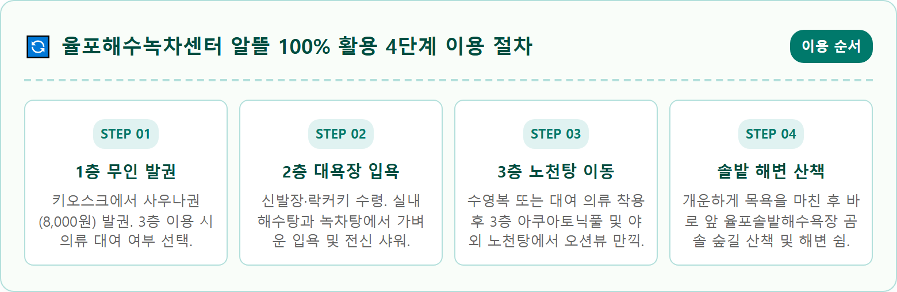
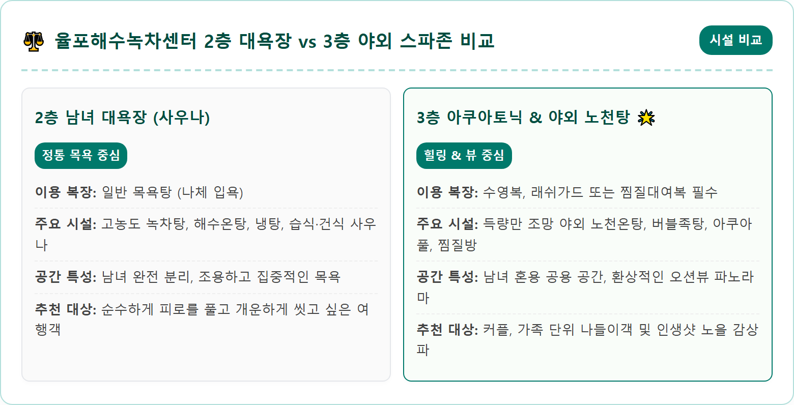
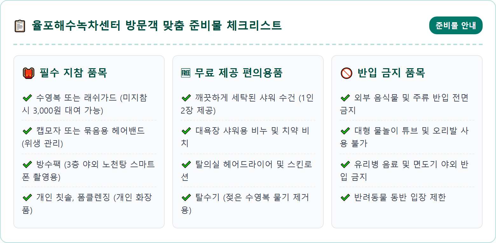
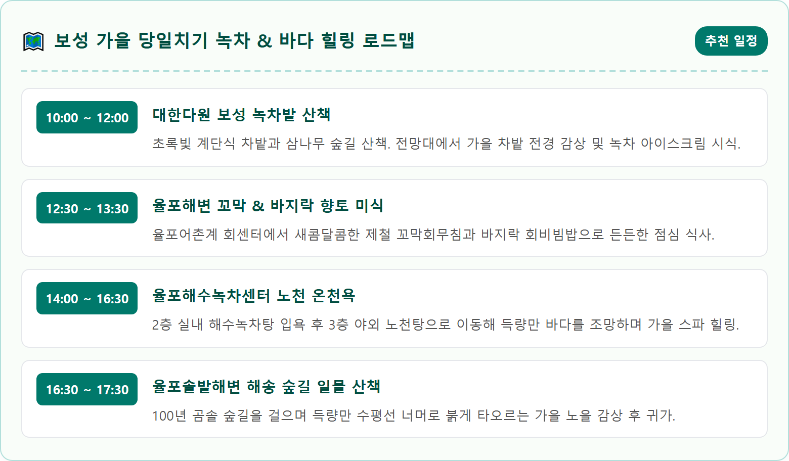
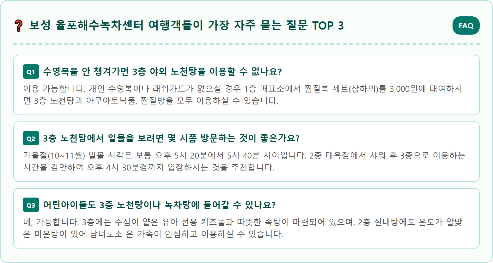

A picturesque coastal open-air hot spring bath overlooking Deukryang Bay at Yulpo Beach Seawater Green Tea Center in Boseong Korea in autumn. Steaming hot spring bath filled with clear amber-green tinted tea-infused thermal water. Expansive panoramic ocean view with tranquil blue sea, coastal pine tree groves, and gentle autumn sunset clouds on the horizon. Clean modern wooden deck with gentle steam rising into the crisp fresh coastal breeze. High quality photorealistic travel photography, 8k resolution, authentic atmosphere, warm lighting.

전라남도 보성군 회천면에 자리 잡은 율포해수녹차센터는 한국을 대표하는 녹차의 고장 보성이 자랑하는 지자체 직영 프리미엄 힐링 스파 시설입니다. 지하 120m 암반층에서 길어 올린 청정 해수와 보성 다원에서 정성껏 재배한 유기농 찻잎 추출액을 블렌딩한 독보적인 온천수를 선보입니다. 문을 열고 들어서는 순간 은은하게 퍼지는 찻잎 향과 청량한 바다 내음이 일상의 피로를 단숨에 씻어내 줍니다.
이곳이 남도를 찾는 여행객들에게 절대적인 찬사를 받는 가장 큰 이유는 센터 3층에 조성된 야외 노천탕 때문입니다. 탁 트인 득량만의 잔잔한 쪽빛 바다와 은빛 율포솔밭해수욕장의 곰솔 숲을 파노라마로 감상하며 따뜻한 해수녹차탕에 몸을 담글 수 있습니다. 특히 가을바람이 솔솔 불어오는 해 질 무렵, 득량만 수평선 너머로 번지는 황금빛 노을을 바라보며 즐기는 노천욕은 남도 여행 최고의 낭만을 선사합니다.
더욱 놀라운 점은 대기업이 운영하는 대형 워터파크와 비교할 수 없을 만큼 저렴한 공공 요금입니다. 성인 기준 단돈 8,000원이라는 믿기 힘든 착한 가격으로 고급 사우나와 녹차탕을 온전히 누릴 수 있어 가성비와 가심비를 모두 만족시킵니다. 가을철 남도 드라이브 여행길에 반드시 들러야 할 율포해수녹차센터의 상세 이용법과 동선 팁을 정리해 드립니다.
율포해수녹차탕이 일반 대중목욕탕이나 단순 온천과 차별화되는 비결은 천연 미네랄 암반 해수와 카테킨 성분이 풍부한 녹차의 환상적인 시너지 효과에 있습니다. 센터에서 사용하는 해수는 오염원이 전혀 없는 지하 120m 깊은 암반층에서 직접 끌어올린 것으로, 마그네슘, 칼슘, 나트륨 등 해양 미네랄이 고농도로 농축되어 있어 피부 삼투압 작용을 통한 노폐물 배출에 매우 탁월합니다.
여기에 보성군 농가에서 수확한 고품질 찻잎을 특수 공법으로 달여낸 진한 녹차 원액을 매일 아침 공급받아 온천탕에 아낌없이 투입합니다. 찻잎 속의 카테킨과 폴리페놀 성분은 강력한 항산화 및 살균 작용을 지니고 있어 건조한 가을철 아토피, 습진 등 피부 트러블 완화에 뛰어난 도움을 줍니다. 또한 피부 모공을 조여주고 탄력을 높여 입욕 후 로션을 바르지 않아도 온몸이 매끄럽고 윤기 나게 정돈됩니다.
온천수의 온도는 입욕객이 가장 편안함을 느끼는 39℃에서 41℃ 사이로 항시 유지되며, 탕에 몸을 담그고 10분 정도 지나면 해수의 온열 효과로 인해 혈액순환이 왕성해지면서 이마에 송골송골 땀방울이 맺힙니다. 신경통, 관절염, 만성 근육통을 앓고 있는 어르신들은 물론, 일상의 긴장으로 어깨가 뻐근한 직장인들에게 최고의 천연 수치료제 역할을 톡톡히 해냅니다.

율포해수녹차센터의 핵심 하이라이트는 단연 3층 옥상 야외 테라스에 위치한 **노천 스파 공간**입니다. 2층 대욕장에서 간단히 몸을 씻고 수영복이나 래쉬가드(또는 대여복)로 갈아입은 뒤 전용 계단을 통해 3층으로 올라가면, 눈앞으로 펼쳐지는 시원한 득량만의 바다 풍광에 탄성이 절로 터져 나옵니다.
야외 노천탕은 따뜻한 온천수가 찰랑이는 메인 노천온탕을 비롯해 보글보글 기포가 솟아오르는 버블 족탕, 유아를 위한 얕은 키즈풀, 피로를 급속히 풀어주는 냉탕 등으로 알차게 꾸며져 있습니다. 탕에 깊숙이 몸을 담그면 난간 너머로 에메랄드빛 바다와 드넓은 갯벌, 그리고 율포해변을 따라 늘어선 울창한 소나무 숲이 파노라마처럼 펼쳐집니다.
가장 추천하는 입욕 시간대는 일몰 1시간 전인 오후 5시 전후입니다. 해가 뉘엿뉘엿 서쪽 산마루로 넘어가면서 득량만 바다 전체가 붉은빛과 보랏빛으로 물들어가는 장관을 따뜻한 녹차 온천수 속에서 바라보는 경험은 평생 잊지 못할 추억을 안겨줍니다. 선선한 가을 해풍이 볼을 스칠 때마다 느껴지는 온천수의 따스함은 천상의 힐링 그 자체입니다.
3층의 야외 노천탕뿐만 아니라 2층에 마련된 실내 대욕장 역시 일반 목욕탕을 압도하는 쾌적한 시설과 규모를 자랑합니다. 2층 남녀 대욕장 내부에는 진한 녹색빛을 띠는 고농도 녹차탕과 맑고 투명한 천연 해수 온탕, 열탕, 냉탕이 질서정연하게 배치되어 있습니다. 녹차탕 벽면에는 대형 차 주전자를 형상화한 조형물에서 끊임없이 따뜻한 녹차수가 흘러내려 시각적인 즐거움까지 더해줍니다.
또한 3층 실내 구역에는 첨단 수치료 시설인 **아쿠아토닉풀(Aqua Tonic Pool)**이 운영됩니다. 이곳은 수심 1.1m의 실내 풀장에 강력한 마사지 제트 노즐이 설치되어 있어 보행 마사지, 넥샤워, 허리 및 종아리 집중 기포 테라피를 즐길 수 있습니다. 물살의 저항을 이용해 전신을 스트레칭하고 림프 순환을 돕는 프로그램으로 수영복을 입고 온 가족이 함께 이용할 수 있습니다.
이 밖에도 3층에는 옥과 황토로 꾸며진 전통 찜질방과 황토방, 아이스방 등 휴게 시설이 완비되어 있어 온천욕 중간중간 누워 땀을 빼거나 휴식을 취하기에 좋습니다. 바다를 조망할 수 있는 통유리창 쉼터 벤치에 앉아 보성 녹차 음료나 시원한 식혜 한 잔을 마시면 남부러울 것 없는 여유를 누릴 수 있습니다.

율포해수녹차센터의 2026년 최신 이용 요금은 보성군 조례에 따라 매우 합리적으로 책정되어 있습니다. 2층 대욕장 사우나를 이용할 수 있는 기본요금은 **대인(만 7세 이상) 8,000원, 소인(36개월~만 7세 미만) 및 경로 우대(만 65세 이상) 5,000원**입니다. 여기에 보성군민이나 국가유공자, 장애인의 경우 신분증 제시 시 추가 감면 혜택이 주어집니다.
만약 3층의 야외 노천탕과 아쿠아토닉풀, 찜질방을 함께 이용하고자 할 때는 전용 의류를 착용해야 합니다. 개인 수영복이나 수영용 래쉬가드를 미리 준비해 오신 분은 별도의 추가 요금 없이 3층 시설을 자유롭게 이용할 수 있습니다. 수영복을 미처 준비하지 못한 경우에는 1층 매표소에서 **찜질복 세트(상하의)를 3,000원에 대여**하여 착용하시면 노천탕과 족탕, 찜질방을 모두 즐기실 수 있습니다.
복장 규정에서 유의할 점은 일반 면 티셔츠나 등산복, 일상복 바지 차림으로는 수질 위생상 3층 물속에 들어갈 수 없다는 점입니다. 머리카락이 흩날리지 않도록 묶어주거나 수영모 또는 야구모자 착용을 권장하고 있으므로 가벼운 캡모자 하나를 챙겨가시면 한결 편리하게 노천욕을 즐기실 수 있습니다.
율포해수녹차센터의 또 다른 커다란 장점은 이른 아침부터 넉넉하게 운영된다는 점입니다. 매일 **오전 6시부터 저녁 8시(20:00)까지 연중무휴**로 문을 엽니다. 아침 일찍 남도 바다 드라이브를 시작하는 부지런한 여행객이나 차박 캠핑족들이 새벽안개를 뚫고 찾아와 상쾌하게 하루를 시작하기에 안성맞춤입니다.
다만 매표 및 입장 마감은 폐장 1시간 전인 저녁 7시에 마감되며, 3층 야외 노천탕과 아쿠아토닉풀은 안전 관리 및 일몰 후 정비 관계로 저녁 7시 30분경부터 퇴실을 유도합니다. 따라서 3층 오션뷰 스파와 2층 대욕장을 여유롭게 모두 체험하시려면 늦어도 오후 5시 30분 이전에는 센터에 입장하시는 일정을 추천합니다.
시간대별 혼잡도를 살펴보면, 주말 낮 12시부터 오후 3시 사이에는 단체 관광객과 가족 나들이객이 몰려 다소 붐빌 수 있습니다. 가장 호젓하고 여유롭게 바다를 독점하고 싶다면 오전 7시~9시 아침 시간대나, 노을이 지는 오후 4시 30분 이후 시간대를 선택해 방문하시면 한층 여유롭고 프라이빗한 힐링을 만끽할 수 있습니다.

율포해수녹차센터는 방문객들의 주차 편의를 위해 건물 바로 앞과 옆 부지에 널찍한 **전용 지상 주차장을 전액 무료**로 개방하고 있습니다. 일반 승용차 200대 이상을 동시에 수용할 수 있는 넉넉한 공간이 확보되어 있어 주말 피크 타임에도 주차 스트레스 없이 여유롭게 차를 댈 수 있습니다. 대형 관광버스를 위한 전용 주차 구역과 장애인 전용 주차면도 정문 가까이에 완비되어 있습니다.
전기차 오너들을 위한 충전 편의도 훌륭합니다. 주차장 한쪽에 환경부 급속 충전기와 한국전력 완속 충전기가 설치되어 있어 스파를 즐기는 1~2시간 동안 여유롭게 차량을 완충할 수 있습니다. 자가용 이용 시 내비게이션에 '보성 율포해수녹차센터' 또는 주소인 '전남 보성군 회천면 우암길 24'를 입력하시면 고속도로 남해선(영암-순천) 보성IC에서 빠져나와 18번 국도를 타고 15분 만에 막힘없이 도착합니다.
대중교통을 이용해 방문하는 방법도 수월합니다. 보성시외버스터미널이나 경전선 보성역 앞에서 율포 방면 농어촌버스(군내버스)가 약 30~40분 간격으로 운행됩니다. 버스를 타고 종점인 '율포해변' 정류장에서 하차하면 도보로 불과 2분 거리에 웅장한 해수녹차센터 건물이 자리하고 있어 뚜벅이 여행자도 부담 없이 찾아올 수 있습니다.
해수녹차센터에서 개운하게 온천욕을 마치고 나오면 바로 정문 길 건너편으로 **율포솔밭해수욕장**이 거짓말처럼 펼쳐집니다. 율포해변은 활처럼 둥글게 휘어진 1km 길이의 고운 은빛 모래사장과 함께, 백사장 뒤편으로 수령 100년이 넘는 아름드리 해송(곰솔) 수백 그루가 방풍림을 이루고 있는 남도의 대표적인 청정 해변입니다.
가을철 솔밭 숲길 아래로는 푹신한 솔잎이 깔려 있어 피톤치드 향기를 맡으며 맨발로 산책하기에 최적입니다. 소나무 사이사이에 통나무 벤치와 정자 쉼터, 그리고 바다를 배경으로 사진을 남길 수 있는 하트 조형물과 액자 포토존이 아기자기하게 조성되어 있습니다. 선선한 가을바람에 부딪히는 솔바람 소리와 잔잔한 득량만 파도 소리가 어우러져 목욕 후 나른해진 몸과 마음에 더없는 평온을 선물합니다.
해변을 따라 조성된 목재 데크로드를 따라 천천히 걸어가면 율포항 방파제와 빨간 등대에 다다릅니다. 방파제 끝자락에 서서 가을 갯벌에서 바지락과 꼬막을 캐는 어촌 풍경을 바라보는 것 또한 남도 여행에서만 맛볼 수 있는 소박한 정취입니다. 해 질 녘이면 바다 전체가 붉게 타오르는 환상적인 일몰을 감상할 수 있으니 목욕 후 솔밭 산책을 절대 건너뛰지 마시기 바랍니다.

율포해수녹차센터를 중심으로 한 보성 가을 여행은 입안 가득 감도는 풍성한 지역 먹거리와 어우러질 때 비로소 완성됩니다. 센터 바로 옆 율포해변 먹거리촌에는 득량만 청정 갯벌에서 갓 잡아 올린 싱싱한 제철 수산물을 맛볼 수 있는 식당들이 즐비합니다. 가을철에 살이 통통하게 오른 **벌교 꼬막 정식**과 쫄깃하고 달콤한 **바지락 회무침 비빔밥**은 새콤매콤한 양념과 참기름 향이 어우러져 밥 한 공기를 뚝딱 비워내게 만듭니다.
식사를 마친 후 차로 15분 거리에 위치한 대한민국 대표 관광농원 **대한다원(보성녹차밭)**으로 이동해 보시기 바랍니다. 수려한 삼나무 숲길을 지나 언덕배기를 따라 끝없이 펼쳐지는 초록빛 계단식 차밭은 사계절 내내 푸르름을 잃지 않는 장관을 연출합니다. 전망대에 올라 바라보는 녹차밭 능선과 가을 단풍나무의 색채 대비는 한 폭의 그림엽서 같은 감동을 줍니다.
시간 여유가 있다면 한국 차 문화의 역사를 한눈에 살펴볼 수 있는 '한국차박물관'과 제암산 자연휴양림 무장애 데크로드 '더늠길'을 함께 연계해 보시는 것도 좋습니다. 푸른 차밭의 고요한 향기와 따뜻한 해수녹차탕의 치유, 그리고 득량만 바다의 낭만이 어우러진 보성 가을 힐링 여행을 이번 주말 꼭 경험해 보시기 바랍니다.
